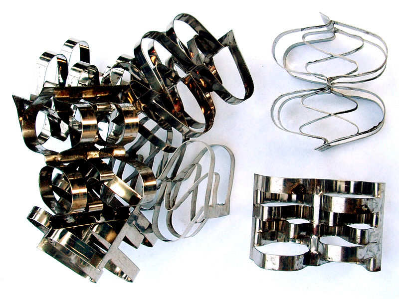
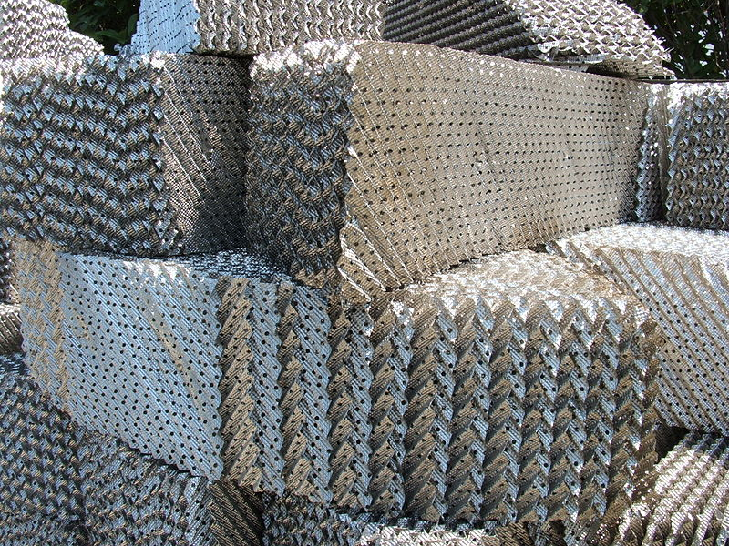
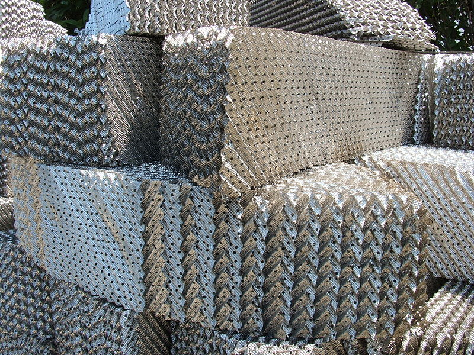

NTU Absorber Design
- So far, we have treated packed columns with a stage-by-stage design, and used a Height Equivalent to a Theoretical Plate (HETP) for sizing.
- Is this appropriate? Within tray columns we can distinguish real stages, therefore the concept of ideal stages is not remote from reality here (its a good approximation), but packed columns are continuous contacting processes…
- In distillation, the use of HETP in packed columns is appropriate as the phases are typically close to equilibrium/well-mixed (due to partial boiling/condensation driving the mass transfer).
- For absorbers, the mass transfer is only driven by concentration differences/diffusion, and diffusion is slow…


Super Rasching rings (top) and structured packing
(bottom). Photos taken by Luigi Chiesa.

- For example, consider the diffusion of sugar in water $(D=0.52\times10^{-5}\text{cm}^2~\text{s}^{-1})$.
- Diffusion is equivalent to a random walk, which grows as: \begin{align*} x^2 = 2 D t \end{align*} (confirm by checking the units)
- Sample calculation 1: After 1 second, sugar molecules will diffuse over a distance of $\approx 3\times10^{-5}$ cm
- Sample calculation 2: After 1 year, sugar molecules will diffuse over a distance of $\approx 18$ cm.
- Diffusion is very slow, it is usually enhanced by microconvection currents (see EX3030).
- But close to interfaces, such as a gas-liquid interface, convection must be small and diffusion must be the primary mode of transport in a boundary layer.
- Consider the interface between two phases, gas and a liquid, where we are absorbing a component from the gas phase into the liquid phase.
- At the interface, there is no resistance (no distance) to mass transfer, therefore the two phases are in equilibrium.
- Provided the diffusing component, $A$, is more soluble in one phase than the other (Henry's coefficient ${\mathcal H}_A\neq1$) there will be a concentration jump across the interface.
- As mass transfer is occurring, there must be a concentration gradient in the liquid and the gas phase.
- The movement of $A$ through the boundary layer is then limited or controlled by the diffusion rates through these two layers.

- All diffusion systems are governed by the general form of Fick's law, which for two components is: \begin{align*} \boldsymbol{N}_A &=-D_{AB} \nabla C_A + x_A \left(\boldsymbol{N}_A + \boldsymbol{N}_B\right) \end{align*}
- Assuming that the concentration gradient is linear, one dimensional, and that we have equimolar counter-diffusion, we have for the liquid phase: \begin{align*} N_A &=-D_{AB,L} C_{L}\frac{x_{A_i} - x_A}{l_L} + \cancelto{0}{\left(N_A + N_B\right)} \end{align*} where $l_L$ is the boundary layer thickness and $C_L$ is the total molar concentration in the liquid phase.
- Grouping terms into a transfer coefficient, we have \begin{align*} N_A &= k_L \left(x_{A_i} - x_A\right) \end{align*} where $k_L' = -D_{AB,L} C_{L} / l_L$.
- Performing the same analysis for the gas phase, we have \begin{align*} N_A &= k_G \left(y_A - y_{A_i}\right) \end{align*} where $k_G' = -D_{AB,G} C_{G} / l_G$ or, writing in terms of pressure, $k_G' = -D_{AB,G} P / (l_G R T)$.
- At steady state, the two fluxes are equal, therefore we can set the equations equal to give: relationship: \begin{align*} -\frac{k_L'}{k_G'}&= \frac{y_A - y_{A_i}}{x_{A_i} - x_A} \end{align*}
- The conditions for equimolar counter-diffusion should be met when performing distillation, if both components have similar latent heats of vaporization.
- But for absorption, typically we're absorbing a quantity of $A$ through the stagnant phase of $B$ or $C$.
- For stagnant, one-dimensional, two-component liquid layers, we have \begin{align*} N_A &=-D_{AB} \nabla C_A + x_A \left(N_A + \cancelto{0}{N_B}\right)\\ &=-D_{AB}C_L\frac{{\rm d} x_A}{{\rm d} x} + x_A N_A \end{align*}
- We know that the continuity equation in the steady-state case gives that $N_A$ is a constant.
- We can then perform the integral in $x$ with the limits $[x_{A}, x_{A,i}]$ and $[0, l_L]$. \begin{align*} N_A &=-\frac{D_{AB}C_L}{1-x_A}\frac{{\rm d} x_A}{{\rm d} x}\\ N_A &= \frac{D_{AB}C_L}{l_L}\ln\left(\frac{1-x_{A,i}}{1-x_A}\right) \end{align*}
- In the majority of industrial processes the film thickness is not known! So we define a new diffusion coefficient, $k_L$, where: \begin{align*} N_A &= k_L \left(x_{A}-x_{A,i}\right) \end{align*} and $k_L = \frac{D_{AB}C_L}{l_L x_{A,M}}$ where $x_{A,M}=(x_{A}-x_{A,i})/\ln\left(\frac{1-x_{A,i}}{1-x_A}\right)$.
\begin{align*}
N_A=k_L \left(x_{A}-x_{A,i}\right) = k_G \left(y_{A,i}-y_{A}\right)
\end{align*}
- This is a blatant attempt to simplify the problem and make it look like equimolar counter-diffusion, otherwise known as Chemical Engineering. Its only useful if $k_L$ and $k_G$ are roughly constant.
- But, assuming that this is the case: We have enormous difficulty measuring $N_A$, $x_A$, and $x_{A,i}$ simultaneously within an experiment; therefore, the gas and liquid phase transfer coefficients $k_L$ and $k_G$ are indirectly fitted to wetted-wall column experiments.
- Still, the variables $x_{A,i}$ and $y_{A,i}$ are inconvenient to work with, further Chemical Engineering must be applied…

- Consider the concentrations in equilibrium with the bulk concentration of the other phase. \begin{align*} x_{A,e} &= f_{VLE}(y_A) & y_{A,e} &= f_{VLE}(x_A) \end{align*}
- We can then define new transfer coefficients: \begin{align*} N_A=K_L \left(x_{A}-x_{A,e}\right) = K_G \left(y_{A,e}-y_{A}\right) \end{align*} where $K_G$ and $K_L$ are the overall gas and liquid phase coefficients.
- These are much easier to work with as the concentrations are only functions of the bulk conditions (think about stage-by-stage design).
- But we must be able to calculate these coefficients, and frame them in terms of the physical coefficients $k_L$ and $k_G$.
- From the discussion, we have \begin{align*} N_A&=k_G\left(y_{A,i}-y_{A}\right)=k_L\left(x_{A}-x_{A,i}\right)\\ &=K_G\left(y_{A,e}-y_{A}\right) = K_L\left(x_{A}-x_{A,e}\right) \end{align*}
- We can then rearrange to give \begin{align*} K_G^{-1}=k_G^{-1}+k_L^{-1}\frac{y_{A,i}-y_{A,e}}{x_{A,i}-x_{A}} \end{align*}
- Interestingly, the second grouping is actually an estimate of the slope of the equilibrium line…

\begin{align*}
K_G^{-1}=k_G^{-1}+k_L^{-1}\frac{y_{A,i}-y_{A,e}}{x_{A,i}-x_{A}}
\end{align*}
- If this slope is constant (Henry's law), we can write \begin{align*} K_G^{-1}=k_G^{-1}+{\mathcal H} k_L^{-1} \end{align*}
- In addition, we also have: \begin{align*} K_L^{-1} &=k_L^{-1}+{\mathcal H}^{-1} k_G^{-1}\\ K_G^{-1} &= {\mathcal H} K_L^{-1} \end{align*}
- Therefore, we can use empirical correlations for $k_L$ and $k_G$ from wetted-wall column experiments to calculate the overall coefficients $K_G$ and $K_L$ (provided Henry's law applies).
\begin{align*}
K_G^{-1}&=k_G^{-1}+{\mathcal H} k_L^{-1}\\
K_L^{-1} &=k_L^{-1}+{\mathcal H}^{-1} k_G^{-1}\\
K_G^{-1} &= {\mathcal H} K_L^{-1}
\end{align*}
- Our analysis only requires either $K_L$ or $K_G$, but both require the determination of $k_L$ and $k_G$.
- In certain limits, we don't have to calculate both $k_L$ and $k_G$.
- If we have a highly soluble gas, then $H\to0$ and $K_G\to k_G$.
- If we have a highly insoluble gas, then $H\to\infty$ and $K_L\to k_L$.
- If we have a moderately soluble gas, then we must calculate both $k_L$ and $k_G$.
- The empirical wetted-wall correlations typically appear in forms such as that below: \begin{align*} \frac{k_G d}{D_{AB} C_L} x_{A,M} = 0.023 \text{Re}^{0.83} \text{Sc}^{0.44} \end{align*} where $d$ is the wetted wall column diameter, $D_G$ is the gas phase diffusion coefficient, and $\text{Sc}=\mu / (\rho D)$ is the Schmidt number.
- This is extremely similar in form to the Dittus-Boelter equation for forced convection in a pipe. \begin{align*} \text{Nu} = 0.0241 \text{Re}^{0.8}\text{Pr}^{n} \end{align*} where $n$ is 0.4 for heating and 0.3 for cooling of fluids
- This is another illustration of the strong analogy between Heat and Mass transfer.

- Given the high accuracy of this model, we should be able to use it to accurately size absorber columns.
- We will not use this to determine a HETP, but instead we will directly calculate the height of the column using a differential mass balance.
- Consider a balance over a slice of the column ${\rm d}Z$ thick.
- Whatever leaves the gas phase, must enter the liquid phase, so we have: \begin{align*} V'{\rm d}Y_A = L'{\rm d}X_A \end{align*} (remember that $Y_A=y_A/(1-y_A)$ and $y_A=Y_A / (1+Y_A)$)
- Considering just the gas phase, the rate at which material is transferred in a slice is: \begin{align*} N_A a A {\rm d}Z&=K_G\left(y_{A,e}-y_{A}\right) a A {\rm d}Z\\ &=K_G\left(\frac{Y_{A,e}}{1+Y_{A,e}}-\frac{Y_{A}}{1+Y_A}\right) a A {\rm d}Z\\ &=K_G\frac{Y_{A,e} - Y_A}{(1+Y_{A,e})(1+Y_A)} a A {\rm d}Z \end{align*} where $a$ is the interfacial area per volume of absorber (a function of the packing), and $A$ is the cross-sectional area.

\begin{align*}
V'{\rm d}Y_A &= L'{\rm d}X_A\\
&= N_A a A {\rm d}Z\\
&=K_G\frac{Y_{A,e} - Y_A}{(1+Y_{A,e})(1+Y_A)} a A {\rm d}Z
\end{align*}
- Setting these rates equal, we have our differential equation: \begin{align*} V'{\rm d}Y_A &= K_G\frac{Y_{A,e} - Y_A}{(1+Y_{A,e})(1+Y_A)} a A {\rm d}Z \end{align*} which becomes \begin{align*} \frac{V'}{K_G a A} \int\frac{(1+Y_{A,e})(1+Y_A)}{Y_{A,e} - Y_A} {\rm d}Y_A &= \int{\rm d}Z \end{align*}
\begin{align*}
\frac{V'}{K_G a A} \int\frac{(1+Y_{A,e})(1+Y_A)}{Y_{A,e} - Y_A} {\rm d}Y_A &= \int{\rm d}Z
\end{align*}
- This is the design equation for absorbers/stripping columns. We can use the expression for liquid flows \begin{align*} \frac{L'}{K_L a A} \int\frac{(1+X_{A})(1+X_{A,e})}{X_{A} - X_{A,e}} {\rm d}Y_A &= \int{\rm d}Z \end{align*}
- In the limit of low concentration, both of these equations become \begin{align*} \frac{V'}{K_G a A} \int\frac{1}{Y_{A,e} - Y_A} {\rm d}Y_A &= \int{\rm d}Z\\ \frac{L'}{K_L a A} \int\frac{1}{X_{A} - X_{A,e}} {\rm d}Y_A &= \int{\rm d}Z \end{align*}
\begin{align*}
\frac{V'}{K_G a A} \int\frac{1}{Y_{A,e} - Y_A} {\rm d}Y_A &= \int{\rm d}Z\\
\frac{L'}{K_L a A} \int\frac{1}{X_{A} - X_{A,e}} {\rm d}Y_A &= \int{\rm d}Z
\end{align*}
- Lets analyse these equations. The RHS becomes the height of the column $\int{\rm d}Z=Z$.
- In the LHS, we can isolate a dimensionless term: \begin{align*} \int\frac{1}{X_{A} - X_{A,e}}\equiv N_{OG} \end{align*} where $N_{OG}$ is the number of overall gas transfer units.
- You can think of this as a dimensionless rating of the column (like theoretical stages).
\begin{align*}
\frac{V'}{K_G a A} \int\frac{1}{Y_{A,e} - Y_A} {\rm d}Y_A &= \int{\rm d}Z\\
\frac{L'}{K_L a A} \int\frac{1}{X_{A} - X_{A,e}} {\rm d}Y_A &= \int{\rm d}Z
\end{align*}
- The benefit of this definition is that the “efficiency”, or Height of a transfer unit, is clearly defined in terms of physical properties: \begin{align} \frac{Z}{N_{OG}} = H_{OG} = \frac{V'}{K_G a A} \end{align}
- And these physical properties are characteristic, or roughly constant, for given column configurations.
- This Number of Transfer Units, or NTU methods, are popular for the design of distillation packed columns, absorber/stripper columns, and heat exchangers !
- Note that the transfer units depends on if you use $k_L$ ( $N_{G}$), $K_L$ ( $N_{OG}$), or the gas equivalents!
\begin{align*}
\frac{V'}{K_G a A} \int\frac{1}{Y_{A,e} - Y_A} {\rm d}Y_A &= \int{\rm d}Z\\
\frac{L'}{K_L a A} \int\frac{1}{X_{A} - X_{A,e}} {\rm d}Y_A &= \int{\rm d}Z
\end{align*}
- We can graphically solve the integral for the NTU: \begin{align*} N_{OG}=\int\frac{1}{Y_{A,e} - Y_A} \end{align*} using the operating line and VLE graph that we would use for a stage-by-stage design…

- Finally, the only way to understand the method is to follow through example calculations.
- These are too detailed to reproduce here, please see pages 688–702 of C&R vol.2 (5th Ed.) for worked examples and additional information.
- Congratulations, there is no additional content for EX3502, just worked examples and tutorials.